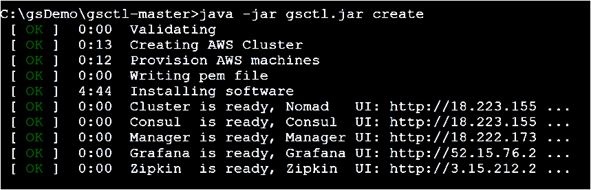
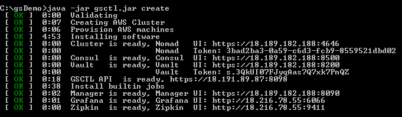

Verify that an .aws folder exists in the home directory on your local machine, and that it contains the config and credentials files. The credentials file should include your aws_access_key_id and aws_secret_access_key, and the config files should include your aws_region and output definitions.

Open a command window and type the following to initialize the utility and define a cluster called gs_demo_cluster:
init --cluster-name=gs_demo_clusterThe init command creates a cluster.yaml file, which you can modify to supply your AWS resources, such as VPC, keyName, and securityGroups values. If you edit any parameter in the AWS section, you must provide all the values for the section.
By default, the utility creates all the resources from the credentials and config files in the .aws folder.
aws:
keyName: null
vpcId: null
vpcSubnetId: null
securityGroup: null
amiId: null
userName: null
servers:
label: "GS Cluster [GS_CLUSTER] Server Group"
groups:
- type: "m4.xlarge"
tags: null
count: 3
clients:
label: "GS Cluster [GS_CLUSTER] Client Group"
groups:
- type: "m4.xlarge"
tags: null
count: 3
gsManagers: 3
name: "GS_CLUSTER"name: gs_demo_cluster
gsManagers: 3
clusterComponents:
- type: "AWS"
name: "AWS_1"
userName: "<auto-generate>"
keyName: "<auto-generate>"
vpcId: "<auto-generate>"
vpcSubnetId: "<auto-generate>"
securityGroup: "<auto-generate>"
amiId: "<auto-generate>"
#iamInstanceProfileArn: "<auto-generate>" #uncomment the lines below in order to use volumes
#volumes:
# ebs:
# - name: "default aws master name"
# id: "<required parameter>"
masters:
label: "GS Cluster [gs_demo_cluster] Master Group"
profiles:
- name: "default aws master name"
type: "m4.xlarge"
tags: []
count: 3
workers:
label: "GS Cluster [gs_demo_cluster] Worker Group"
profiles:
- name: "default aws worker name"
type: "m4.xlarge"
tags: []
count: 3To deploy the cluster in the cloud, run the following command:
createThe cloud platform begins to create the cluster:


The Nomad token is required to log in to the Nomad UI. The token itself is also used as the password for the default users: gs-admin, gs-mngr and gs-viewer.
You can monitor the progress of the cluster in your cloud platform dashboard, for example the VPC Dashboard in AWS:

The process of creating the cluster takes only a few minutes until the nodes are up and running. You can see when the Master (server) nodes and Worker (client) nodes are running and have passed the status checks.